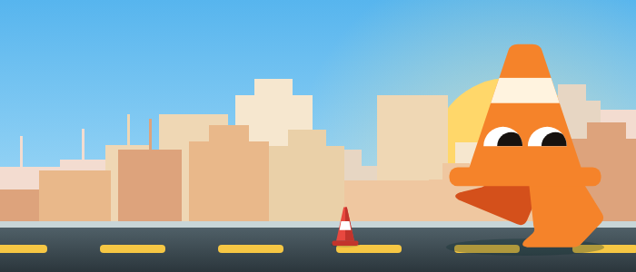
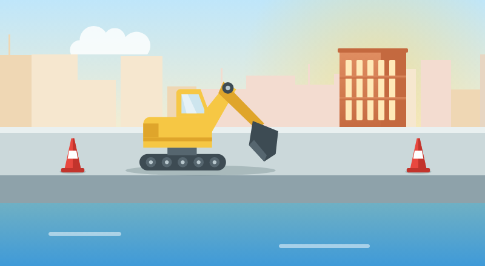

Veri
Site
7

Isang scan pa, maria_s!
7 araw na streak
Pinakabago
Lahat ng status
Kalsada
Malapit na sa petsa
Kalsada sa Burol
Burol Main • Nob 1
18%
•
2 report
Ayon sa plano
Tulay sa Salawag
Salawag Rd • Okt 28
25%
•
0 report

Lampas sa petsa
Kanal sa Aguinaldo
Salitran II • Okt 20
65%
•
14 report
Simula
Scan
Mapa